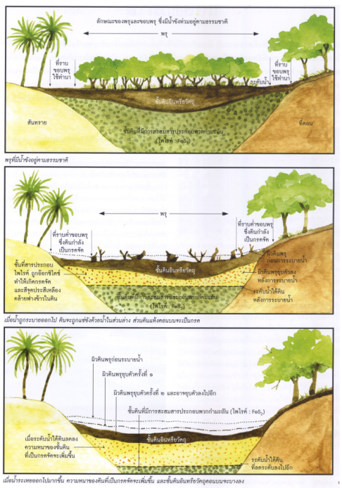

ศูนย์ศึกษาการพัฒนาพิกุลทอง อันเนื่องมาจากพระราชดำริ ได้ศึกษาวิจัยและปรับปรุงดิน โดยวิธีการ"แกล้งดิน" คือ การทำดินให้เปรี้ยวจัดหรือเป็นกรดมากที่สุด ด้วยการทำให้ดินเปียกและแห้งสลับกันไป โดยการทดน้ำเข้าแปลงทดลองระยะหนึ่งแล้วระบายน้ำออก เพื่อทำให้ดินแห้งเป็นระยะเวลาหนึ่งสลับกัน เท่ากับเป็นการกระตุ้นให้ดินมีความเป็นกรดยิ่งขึ้น โดยอาศัยหลักการนี้ พระบาทสมเด็จพระปรมินทรมหาภูมิพลอดุลยเดช จึงทรงให้เลียนแบบสภาพความเป็นไปในธรรมชาติ ที่มีฤดูแล้งและฤดูฝนสลับกันไป โดยปล่อยให้ดินแห้ง 1 เดือน และขังน้ำให้ดินเปียกนาน 2 เดือน สลับกันไป จึงเกิดภาวะดินแห้งและดินเปียก 4 รอบ ใน 1 ปี เสมือนกับมีฤดูแล้งและฤดูฝน 4 ครั้งในเวลา 1 ปี หลังจากที่เสร็จกระบวนการนี้แล้วจึงหาวิธีการปรับปรุงดินให้ดีขึ้น

แสดงขั้นตอนการเกิดดินเปรี้ยวในบริเวณพรุและที่ราบต่ำขอบพรุในท้องที่จังหวัดนราธิวาส
https://www.scimath.org/article-chemistry/item/12420-2021-08-23-06-06-47